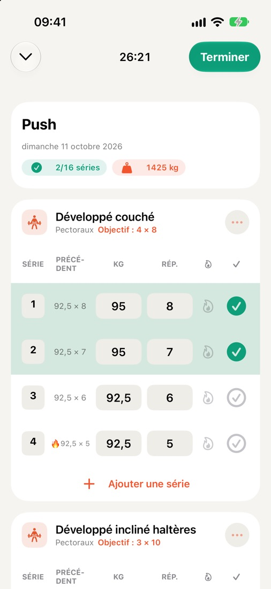
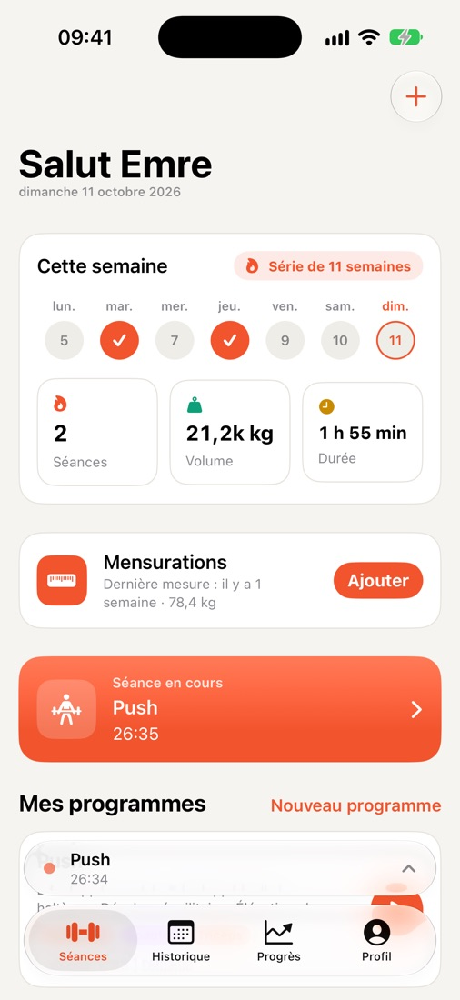
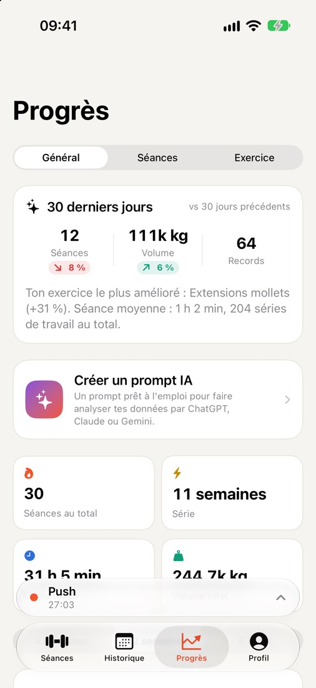
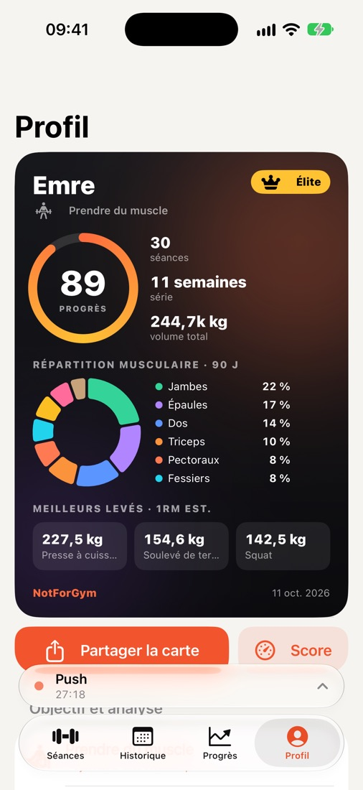
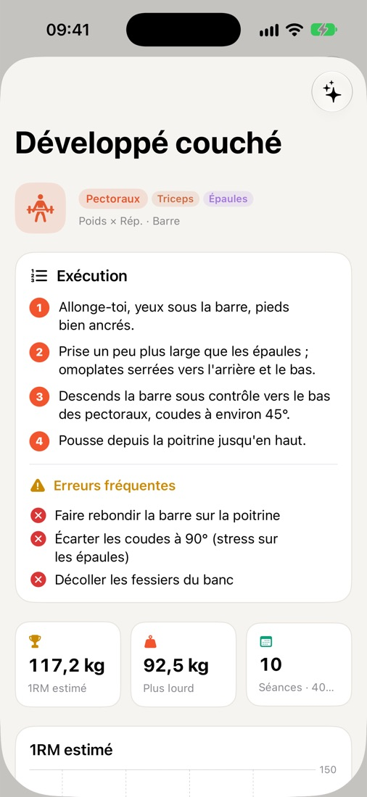
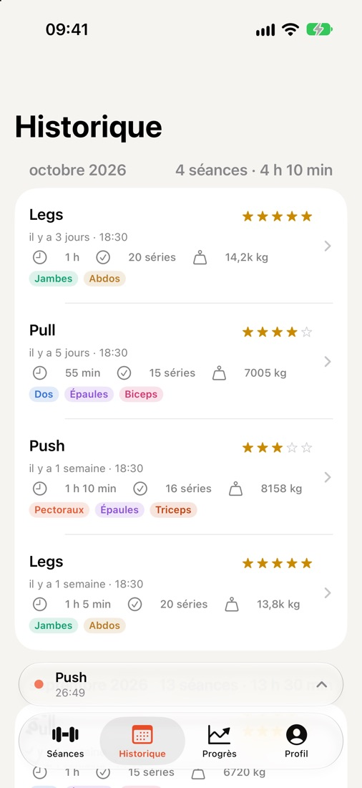

Notez chaque série.
Voyez chaque progrès.
NotForGym est un carnet d'entraînement rapide et sans fioritures pour iPhone et Apple Watch. Votre dernière séance s'affiche à côté de chaque série, le minuteur de repos tourne sur l'écran verrouillé et vos progrès apparaissent en records et en graphiques. Sans compte, sans inscription.

Conçu pour le temps entre deux séries
Tout ce qu'il vous faut à la salle, rien de superflu.
Saisie express des séries
La charge et les répétitions de la dernière séance à côté de chaque série. Échauffement, séries à l'échec, notes et difficulté en un geste.
Repos et Activité en direct
Le compte à rebours du repos s'affiche sur l'écran verrouillé et dans la Dynamic Island : validez une série ou passez le repos sans ouvrir l'app.
Apple Watch
Consultez votre prochaine série, validez-la et sentez une vibration au poignet à la fin du repos.
Progrès et records
Graphiques de volume hebdomadaire, 1RM estimé, records personnels et répartition par groupe musculaire pour repérer ce que vous négligez.
Plus de 250 exercices
Une bibliothèque complète avec matériel et muscles ciblés, plus des guides pas à pas et les erreurs fréquentes pour les mouvements les plus populaires.
Mensurations
Suivez votre poids et vos mensurations dans le temps, avec un rappel hebdomadaire si vous le souhaitez.
Apple Santé
Les séances terminées peuvent être enregistrées dans Santé et comptent pour vos anneaux Activité.
Synchronisation iCloud
Vos données se synchronisent via votre propre iCloud privé et reviennent après une réinstallation ou sur un nouvel iPhone.
Carte d'athlète et widget
Une carte à partager avec votre score de progrès, votre série et vos meilleures charges ; aussi en widget pour l'écran d'accueil et l'écran verrouillé.
Résumé prêt pour l'IA
Créez un prompt à partir de vos séances et collez-le dans l'assistant IA que vous utilisez déjà.
Import et export CSV
Vos données vous appartiennent. Exportez tout en tableur quand vous voulez, ou réimportez-le.
8 langues
English, Türkçe, Deutsch, Español, Português (Brasil), Français, Italiano et 日本語.
De plus près





Gratuit. Toutes les fonctions.
- Jamais de pub pendant la séance
- Supprimez les pubs en un achat, restaurable sur tous vos appareils
- Ni compte, ni abonnement
Votre entraînement vous appartient.
- Pas d'inscription, pas d'e-mail
- Les données de santé ne servent jamais à la publicité
- Tout effacer d'un seul bouton